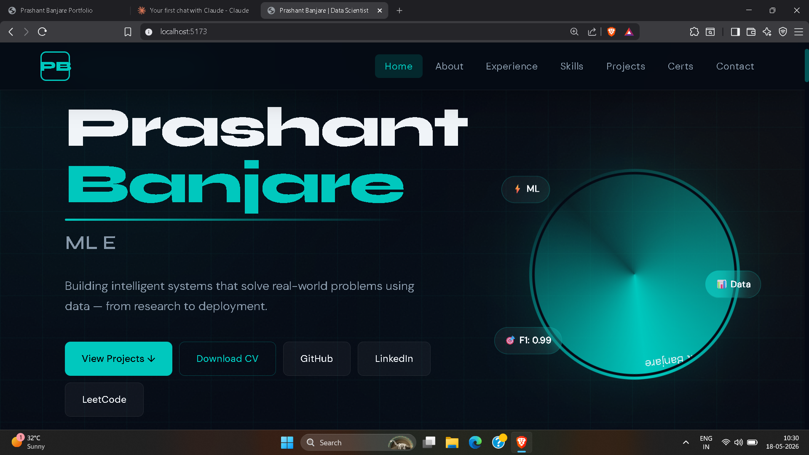
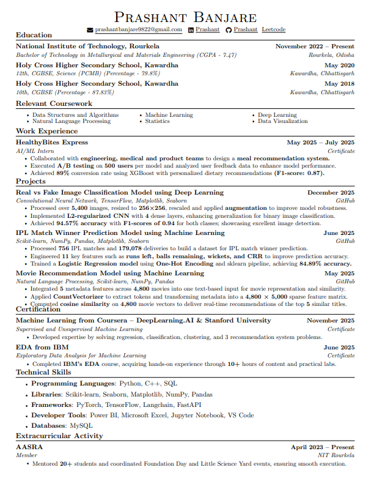

I am currently pursuing my B.Tech at the National Institute of Technology, Rourkela.I am passionate about Data Science and Machine Learning, with a strong interest in building intelligent systems that solve real-world problems using data.

Apart from my academic and technical interests, I enjoy playing cricket, which helps me develop teamwork, focus, and a competitive mindset.

Click to view CV
Certificate: View Certificate
Certificate: View Certificate
Deep learning model to classify images into real and AI generated categories.
View Project Test Project